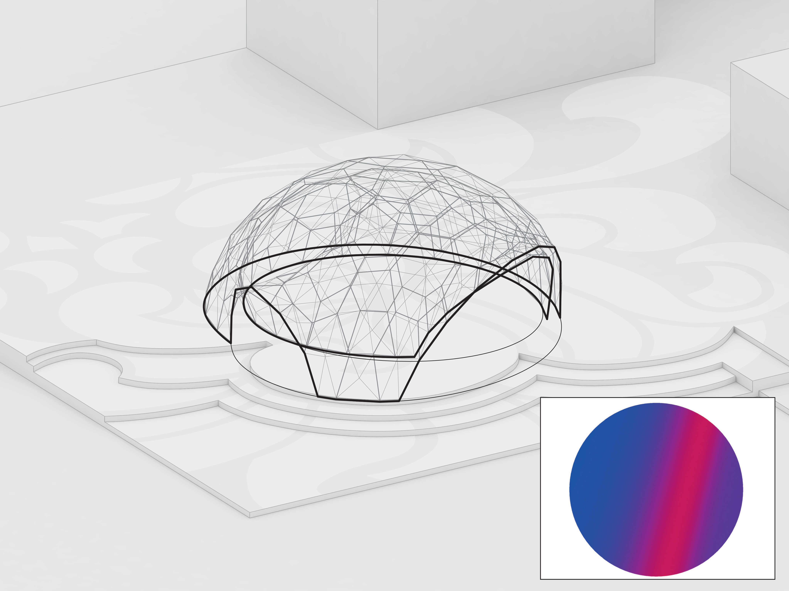

Exterior view of the pavilion on the university campus.
Photo by ICD, University of Stuttgart.
Studio project at the University of Stutgart
with Oliver David Krieg
supervised by ICD (Institute for Computational Design and Construction, Prof. Achim Menges)
and ITKE (Institute of Building Structures and Structural Design, Prof. Jan Knippers)
2010-2011, Stuttgart
Exterior view of the pavilion on the university campus.
Photo by ICD, University of Stuttgart.
This pavilion project was the second in a series of architectural demonstrators developed by a collaboration between the institutes ICD and ITKE at the University of Stuttgart. The foundation for the design was a material system developed by Oliver David Krieg, which consisted of plywood plates connected by robotically milled finger joints. Employing a biomimetic approach, the plate structure of Echinoidea (sea urchins and sand dollars) was used as an inspiration for the structural logic and morphology of the pavilion.

Interior view of the pavilion.
Photo by ICD, University of Stuttgart.
I worked with Oliver on determining the best tessellation principle for the plywood plates, taking into account constraints such as the reach of the robot arm, the possible finger joint angles, the local and global structural stability of the pavilion, and the logistics of its assembly. Additionally, a spatial programme and the specifics of its location - a small square at the university campus - had to be respected. All these factors informed a physics-based form-finding algorithm that determined the final design.

Interior view of the pavilion at night.
Photo by ICD, University of Stuttgart.
The building blocks of the pavilion were facetted polygonal cassettes that integrated parametrically varying openings and LED strips on their interior side. I contributed to the automatisation of fabrication data retrieval from the model, which aided the production of the highly complex assembly of bespoke elements.

Bird's eye view of the pavilion.
Photo by ICD, University of Stuttgart.
The construction team included Peter Brachat, Benjamin Busch, Solmaz Fahimian, Christin Gegenheimer, Nicola Haberbosch, Elias Kästle, Oliver David Krieg, Yong Sung Kwon and me. Key roles in supervision and assistance were played by Markus Gabler (project management), Riccardo La Magna (structural design), Steffen Reichert (detail design), Tobias Schwinn (project management) and Frédéric Waimer (structural design).

Physics-based form studies with curvature analysis.
Image by ICD, University of Stuttgart.
More info here.